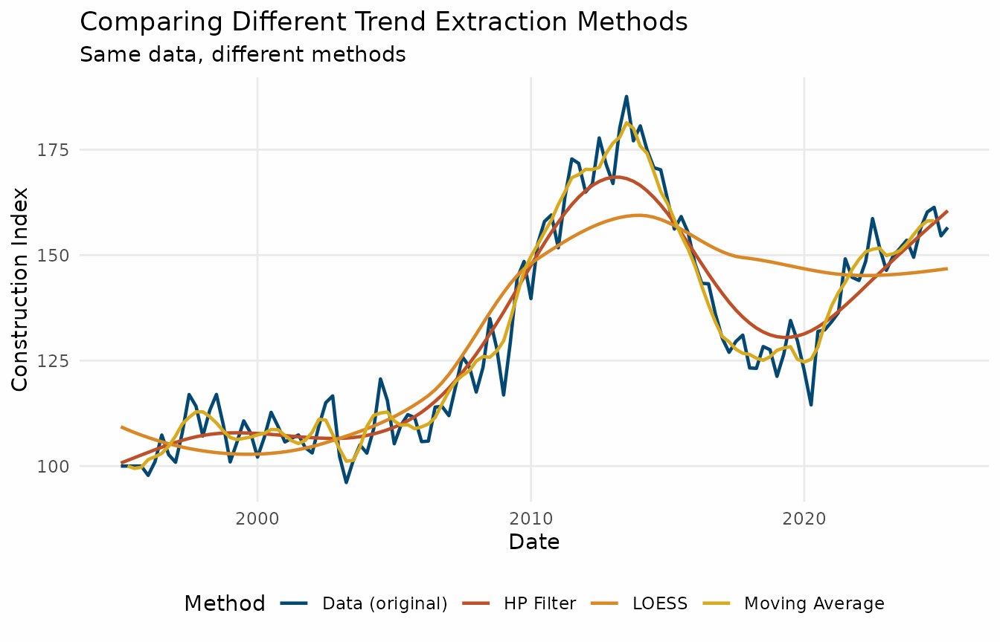
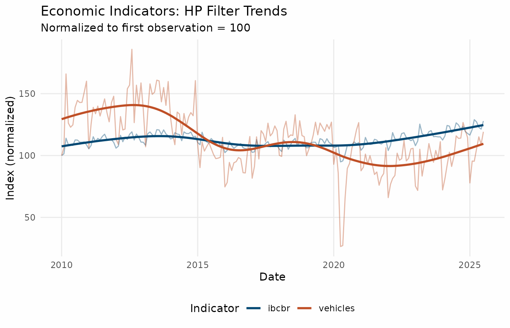

library(trendseries)
library(dplyr)
library(ggplot2)
theme_series <- theme_minimal(paper = "#fefefe") +
theme(
legend.position = "bottom",
panel.grid.minor = element_blank(),
# Use colors
palette.colour.discrete = c(
"#024873FF",
"#BF4F26FF",
"#D98825FF",
"#D9AA1EFF",
"#A2A637FF"
)
)What is trendseries?
The trendseries package helps you extract trends from
economic time series data. Think of trends as the underlying direction
of your data, stripped of short-term fluctuations and noise.
This vignette will walk you through the basics, starting with the simplest possible example and gradually building up to more complex analyses.
Purpose
The main purpose of trendseries is to simplify the
workflow of trend extraction, especially when working with data frames
and grouped data. It provides two main functions:
-
augment_trends(): Takes a data frame with a date column and a value column, and adds new columns with the extracted trends using specified methods. -
extract_trends(): Takes a single time series object (ts) and returns the extracted trends.
Tabular data frames are the most common format for time series data
in R, but most trend extraction methods are designed for ts
objects. trendseries bridges this gap, allowing you to work
directly with data frames without cumbersome conversions.
trendseries was designed to work fluidly with
tidyverse tools like dplyr and
ggplot2.
This package was designed with economic time series in mind, in this sense, it includes methods commonly used in economics (e.g., Hodrick-Prescott filter) as well as general-purpose smoothing methods (e.g., LOESS, moving averages).
Your First Trend Analysis
Let’s start with the simplest possible example: extracting a trend from Brazilian GDP construction data.
# Load the data
data("gdp_construction", package = "trendseries")
# Take a quick look
head(gdp_construction)
#> # A tibble: 6 × 2
#> date gdp_construction
#> <date> <dbl>
#> 1 1995-01-01 100
#> 2 1995-04-01 100
#> 3 1995-07-01 100
#> 4 1995-10-01 100
#> 5 1996-01-01 97.8
#> 6 1996-04-01 101.This dataset contains quarterly observations of Brazil’s construction sector GDP. Let’s extract a trend using the Hodrick-Prescott (HP) filter, one of the most common methods in economics.
# Extract trend using HP filter
gdp_with_trend <- augment_trends(
gdp_construction,
value_col = "gdp_construction",
methods = "hp"
)
#> Auto-detected quarterly (4 obs/year)
#> Computing HP filter (two-sided) with lambda = 1600
# View the result
head(gdp_with_trend)
#> # A tibble: 6 × 3
#> date gdp_construction trend_hp
#> <date> <dbl> <dbl>
#> 1 1995-01-01 100 101.
#> 2 1995-04-01 100 101.
#> 3 1995-07-01 100 102.
#> 4 1995-10-01 100 103.
#> 5 1996-01-01 97.8 103.
#> 6 1996-04-01 101. 104.That’s it! The augment_trends() function added a new
column called trend_hp to your data. The original data
stays intact, and you get a new column with the trend.
Visualizing Your First Trend
Let’s see what this trend looks like.
# Prepare data for plotting
plot_data <- gdp_with_trend |>
select(date, gdp_construction, trend_hp) |>
tidyr::pivot_longer(
cols = c(gdp_construction, trend_hp),
names_to = "series",
values_to = "value"
) |>
mutate(
series = case_when(
series == "gdp_construction" ~ "Data (original)",
series == "trend_hp" ~ "HP Filter Trend"
)
)
# Create the plot
ggplot(plot_data, aes(x = date, y = value, color = series)) +
geom_line(linewidth = 0.8) +
labs(
title = "Brazil GDP Construction: Original vs Trend",
x = "Date",
y = "Construction Index",
color = NULL
) +
theme_seriesNotice how the trend smooths out the short-term fluctuations in the original data. This makes it easier to see the long-term direction of the construction sector.
What if my data is a sinlge time series?
If your data is already a ts object, you can use the
extract_trends() function directly. This is useful for
quick analyses or when working with single series.
gdp <- ts(
gdp_construction$gdp_construction,
frequency = 4,
start = c(1996, 1)
)
gdp_trend_hp <- extract_trends(gdp, "hp")
#> Computing HP filter (two-sided) with lambda = 1600Trying Different Trend Methods
The HP filter is just one way to extract trends. Let’s compare it with two other popular methods.
- HP filter: Standard choice in macroeconomics
- LOESS: Local polynomial smoothing
- Moving Average (MA): Simple average of nearby points
# Extract multiple trends at once
gdp_comparison <- gdp_construction |>
augment_trends(
value_col = "gdp_construction",
methods = c("hp", "loess", "ma")
)
#> Auto-detected quarterly (4 obs/year)
#> Computing HP filter (two-sided) with lambda = 1600
#> Computing loess trend with span = 0.75
#> Computing 2x{window}-period moving average with center alignment
# View the first few rows
gdp_comparison |>
select(date, gdp_construction, starts_with("trend_")) |>
head()
#> # A tibble: 6 × 5
#> date gdp_construction trend_hp trend_loess trend_ma
#> <date> <dbl> <dbl> <dbl> <dbl>
#> 1 1995-01-01 100 101. 109. NA
#> 2 1995-04-01 100 101. 109. 100
#> 3 1995-07-01 100 102. 108. 99.4
#> 4 1995-10-01 100 103. 107. 99.7
#> 5 1996-01-01 97.8 103. 107. 102.
#> 6 1996-04-01 101. 104. 106. 102.Now let’s visualize all three methods:
# Prepare data for plotting
comparison_plot <- gdp_comparison |>
select(date, gdp_construction, starts_with("trend_")) |>
tidyr::pivot_longer(
cols = c(gdp_construction, starts_with("trend_")),
names_to = "method",
values_to = "value"
) |>
mutate(
method = case_when(
method == "gdp_construction" ~ "Data (original)",
method == "trend_hp" ~ "HP Filter",
method == "trend_loess" ~ "LOESS",
method == "trend_ma" ~ "Moving Average"
)
)
# Plot
ggplot(comparison_plot, aes(x = date, y = value, color = method)) +
geom_line(linewidth = 0.8) +
labs(
title = "Comparing Different Trend Extraction Methods",
subtitle = "Same data, different methods",
x = "Date",
y = "Construction Index",
color = "Method"
) +
theme_series
#> Warning: Removed 3 rows containing missing values or values outside the scale range
#> (`geom_line()`).
Each method produces a slightly different trend. The HP filter and LOESS are quite similar, while the moving average is slightly more responsive to changes in the data.
Working with Monthly Data
So far we’ve used quarterly data (4 observations per year). Let’s try monthly data, which is more common in economic analysis.
# Load monthly vehicle production data
data("vehicles", package = "trendseries")
# Look at recent data (last 4 years)
recent_vehicles <- vehicles |>
slice_tail(n = 48)
head(recent_vehicles)
#> # A tibble: 6 × 2
#> date vehicles
#> <date> <dbl>
#> 1 2021-08-01 178900
#> 2 2021-09-01 156803
#> 3 2021-10-01 170178
#> 4 2021-11-01 176322
#> 5 2021-12-01 219446
#> 6 2022-01-01 136105The process is exactly the same - augment_trends()
automatically detects the frequency.
# Extract trend from monthly data
vehicles_with_trend <- vehicles |>
augment_trends(
value_col = "vehicles",
methods = "hp"
)
#> Auto-detected monthly (12 obs/year)
#> Computing HP filter (two-sided) with lambda = 14400
vehicles_with_trend <- vehicles_with_trend |>
tidyr::pivot_longer(
cols = c(vehicles, trend_hp),
names_to = "series",
values_to = "value"
) |>
mutate(
series = ifelse(series == "vehicles", "Original", "HP Trend"),
# To make sure the trend is plotted on top of the original series
# configure levels accordingly
series = factor(series, levels = c("Original", "HP Trend"))
)
ggplot(vehicles_with_trend, aes(x = date, y = value, color = series)) +
geom_line(linewidth = 0.8) +
labs(
title = "Brazil Vehicle Production: Monthly Data",
subtitle = "Last 4 years of data",
x = "Date",
y = "Production (thousands of units)",
color = NULL
) +
theme_seriesUnderstanding Parameters: Window and Smoothing
Different trend methods accept different parameters. The
trendseries package simplifies this with two main
parameters:
-
window: Controls the period for moving averages (e.g., 12 months) -
smoothing: Controls how smooth the trend should be
Let’s experiment with the window parameter for a moving
average.
# Try different window sizes
vehicles_windows <- recent_vehicles |>
augment_trends(
value_col = "vehicles",
methods = "ma",
window = 6
) |>
rename(trend_ma_6m = trend_ma)
#> Auto-detected monthly (12 obs/year)
#> Computing {window}-period moving average with center alignment
# Add 12-month window
vehicles_windows <- vehicles_windows |>
augment_trends(
value_col = "vehicles",
methods = "ma",
window = 12
)
#> Auto-detected monthly (12 obs/year)
#> Computing 2x{window}-period moving average with center alignment
# Visualize
vehicles_windows <- vehicles_windows |>
select(date, vehicles, trend_ma_6m, trend_ma) |>
tidyr::pivot_longer(
cols = c(vehicles, trend_ma_6m, trend_ma),
names_to = "method",
values_to = "value"
) |>
mutate(
method = case_when(
method == "vehicles" ~ "Data (original)",
method == "trend_ma_6m" ~ "MA (6-month)",
method == "trend_ma" ~ "MA (12-month)"
)
)
ggplot(vehicles_windows, aes(x = date, y = value, color = method)) +
geom_line(linewidth = 0.8) +
labs(
title = "Window Size Comparison",
subtitle = "Larger windows = smoother trends",
x = "Date",
y = "Production (thousands)",
color = NULL
) +
theme_series
#> Warning: Removed 16 rows containing missing values or values outside the scale range
#> (`geom_line()`).
Key insight: Larger windows produce smoother trends but are slower to react to changes. Smaller windows track the data more closely but may still include some noise.
For monthly data: - Short-term trend: window = 3 to
6 - Medium-term trend: window = 12 (one year)
- Long-term trend: window = 24 or more
Working with Multiple Series
A common task is comparing trends across different time-series. Let’s
look at economic activity and vehicle production together.
augment_trends() can handle this easily with the
group_vars argument.
data("ibcbr", package = "trendseries")
series <- full_join(ibcbr, vehicles, by = "date")
series <- series |>
filter(date >= as.Date("2010-01-01")) |>
tidyr::pivot_longer(
cols = c(ibcbr, vehicles),
names_to = "indicator",
values_to = "value"
) |>
# Normalize to Jan 2010 = 100 for comparison
mutate(
index = value / first(value) * 100,
.by = indicator
)
series <- augment_trends(
series,
value_col = "index",
methods = "hp",
group_vars = "indicator"
)
#> Auto-detected monthly (12 obs/year)
#> Computing HP filter (two-sided) with lambda = 14400
#> Auto-detected monthly (12 obs/year)
#> Computing HP filter (two-sided) with lambda = 14400
# Plot trends only
series |>
ggplot(aes(x = date, color = indicator)) +
geom_line(aes(y = index), alpha = 0.4) +
geom_line(aes(y = trend_hp), linewidth = 1) +
labs(
title = "Economic Indicators: HP Filter Trends",
subtitle = "Normalized to first observation = 100",
x = "Date",
y = "Index (normalized)",
color = "Indicator"
) +
theme_series
This shows both series moved together during the pandemic period but diverged afterwards, with economic activity recovering more strongly than vehicle production.
Available Trend Methods
The trendseries package supports many trend extraction
methods. Here are the most commonly used:
Economic/Econometric Filters
-
hp: Hodrick-Prescott filter (default, widely used in macroeconomics) -
bk: Baxter-King bandpass filter (isolates business cycles) -
cf: Christiano-Fitzgerald filter (asymmetric bandpass) -
hamilton: Hamilton regression filter (recent alternative to HP)
Moving Averages
-
ma: Simple moving average (easiest to understand) -
ewma: Exponentially weighted moving average (more weight on recent data) -
wma: Weighted moving average (emphasizes recent observations) -
zlema: Zero-lag exponential moving average (reduced lag) -
triangular: Triangular moving average (double-smoothed)
Smoothing Methods
-
loess: Local polynomial regression (flexible, data-adaptive) -
spline: Smoothing splines (very smooth) -
stl: Seasonal-trend decomposition (handles seasonality)
Advanced Methods
-
sg: Savitzky-Golay filter (preserves features like peaks) -
kalman: Kalman smoother (optimal under certain assumptions) -
kernel: Kernel regression smoother (nonparametric)
Recommendation for beginners: Start with
hp for general use, ma when you want something
simple and interpretable, and stl when your data has clear
seasonal patterns.
Quick Reference: Common Patterns
Here are some ready-to-use patterns for common scenarios:
Basic trend extraction
# Single method, quarterly data
data |>
augment_trends(value_col = "your_column", methods = "hp")
# Single series, monthly data
extract_trends(your_ts_data, method = "loess")Compare multiple methods
data |>
augment_trends(
value_col = "your_column",
methods = c("hp", "loess", "ma")
)Control smoothness
# Smoother HP filter (higher lambda)
data |>
augment_trends(
value_col = "your_column",
methods = "hp",
smoothing = 3200 # vs default 1600 for quarterly
)
# Longer moving average window
data |>
augment_trends(
value_col = "your_column",
methods = "ma",
window = 24 # 2-year window for monthly data
)Grouped data
# Apply trend to multiple series at once
multi_series_data |>
group_by(country) |>
augment_trends(value_col = "gdp", methods = "hp") |>
ungroup()
# Or using group_vars argument
multi_series_data |>
augment_trends(
value_col = "gdp",
methods = "hp",
group_vars = "country"
)Next Steps
Now that you understand the basics, you can:
- Explore specific methods in depth: Check out the “Moving Averages” vignette for detailed analysis of MA methods.
- Learn about economic filters: See the “Economic Filters” vignette for HP, BK, and CF filters.
- Try advanced methods: Explore STL decomposition, Kalman filtering, and more in the “Advanced Methods” vignette.
-
Read the function documentation:
?augment_trendsand?extract_trends.
Built-in Datasets
The package includes several economic datasets for practice.
Brazilian Economic Data
All series are monthly except for gdp_construction. -
ibcbr: Central Bank Economic Activity
Index - smooth, good for learning -
vehicles: Vehicle production - cyclical,
interesting patterns - electric:
Electricity consumption - seasonal patterns -
oil_derivatives: Oil derivatives
production - gdp_construction: GDP
construction index - smooth, great for first examples
FAQ
How is trendseries easier than the traditional
workflow?
Time series have a specific structure in R (ts) and most
filtering methods are designed for ts objects. However,
datasets come as data frames with date columns, which can make applying
filters cumbersome.
The usual workflow involves (1) converting individual columns to
ts, (2) applying the filter, (3) and then converting back
to a data.frame. This can be cumbersome, especially when
working with multiple series or grouped data. Merging back the results
with the original data can also be error-prone due to misalignment of
dates and additional NA values introduced by some
filters.
For instance, to replicate the first example in this vignette,
without trendseries, you would have to first convert the
data frame to a ts object, mannually inputing both
frequency and start parameters:
gdp_cons <- ts(
gdp_construction$gdp_construction,
frequency = 4,
start = c(1996, 1)
)
# Or, using lubridate to extract year and month
gdp_cons <- ts(
gdp_construction$gdp_construction,
frequency = 4,
start = c(lubridate::year(min(gdp_construction$date)),
lubridate::quarter(min(gdp_construction$date)))
)Then apply the HP filter using the mFilter package.
gdp_trend_hp <- mFilter::hpfilter(gdp_cons, 1600)And finally, convert it back to a data.frame and merge
with the original data.
What are the alternatives to trendseries?
The closest alternative to trendseries is the
tsibble/fable ecosystem, which provides a
model() function for applying models — including some trend
extraction methods — to grouped time series. Like
trendseries, these packages integrate well with
tidyverse tools and pipes.
However, fable was designed primarily for forecasting,
which means its trend extraction capabilities are more limited. They
also lack some popular methods commonly used by economists, such as the
HP filter and the Hamilton filter.
Additionally, these packages require using the tsibble
data structure, which pulls users away from the familiar
data.frame/tibble format. For users working
with just a few time series and relying on R’s built-in ts
functionality, the tsibble structure can feel unnecessarily
complex.
Acknowledgements
This package was inspired by the need for a simpler workflow for trend extraction in R. It builds upon many existing packages, including:
-
mFilterfor economic filters. -
hpfilterfor Hodrick-Prescott filtering. -
signalfor Savitzky-Golay filtering. -
TTRandzoofor efficient moving averages. -
tsboxfor time series conversions.
Getting Help
If you run into issues:
- Check the documentation:
?augment_trends - View examples:
example(augment_trends) - Read other vignettes:
vignette(package = "trendseries") - Report bugs: GitHub issues